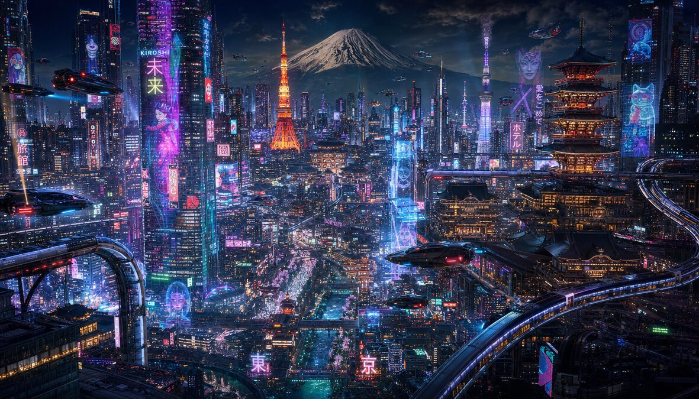
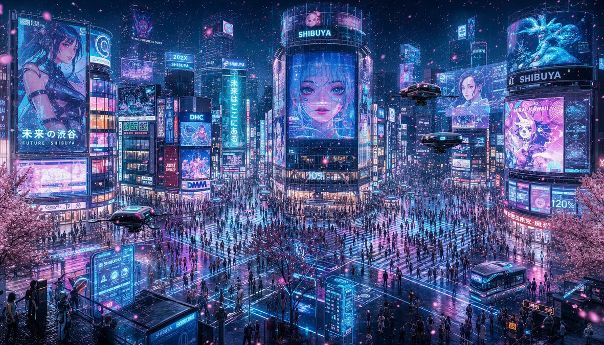
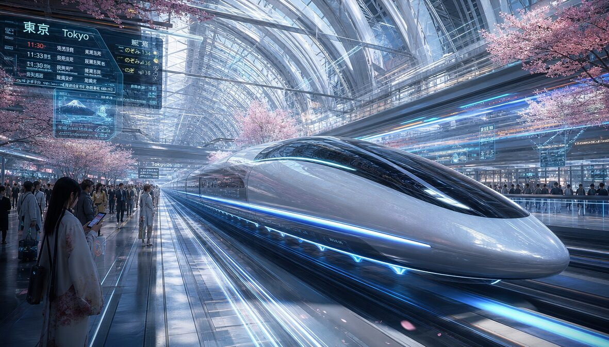
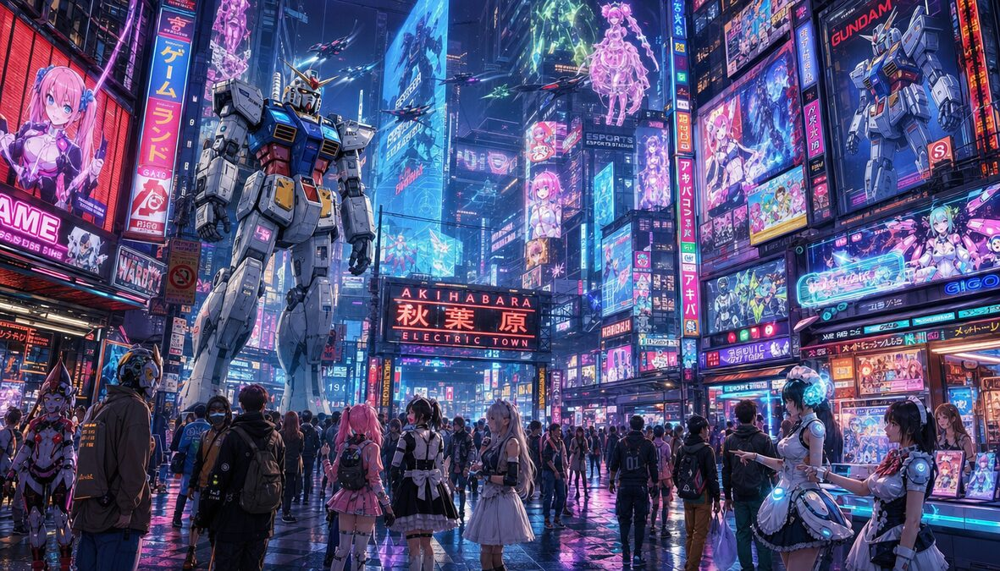
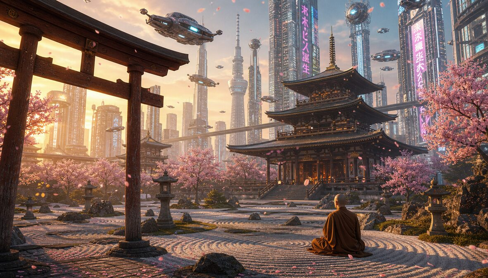
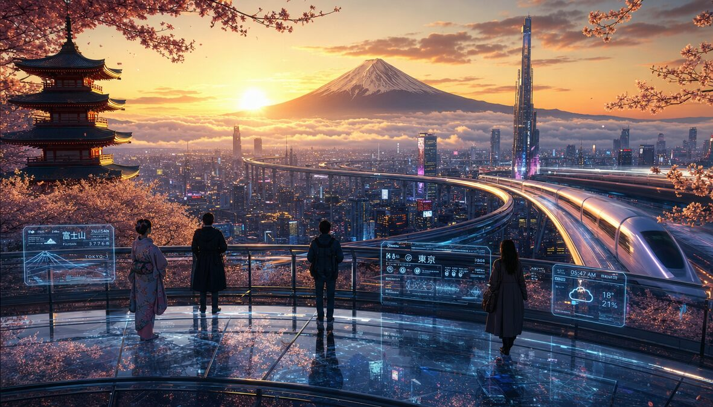

They burned it. They bombed it. They shook it with earthquakes. It came back bigger every time. Tokyo doesn't rebuild — it upgrades. A city where 800-year-old temples share a block with robot restaurants. Where the trains apologize for being 20 seconds late. Where 35 million people move in perfect choreography and nobody touches. This isn't a city. This is the operating system of the future, and it's already running.
🏙️ The Gallery






🌐 The 9 Districts of Tomorrow
SHINJUKU NEXUS
SHIBUYA CROSSING
SHINKANSEN STATION
AKIHABARA ELECTRIC TOWN
SENSO-JI TEMPLE
TSUKIJI — THE KITCHEN
UENO — THE GARDEN
ODAIBA — THE FUTURE
IMPERIAL PALACE
⛩️ The 6 Pillars of Japan
AMATERASU
Sun goddess. Born from a mirror. Ancestor of every emperor. Still shining.
SUSANOO
Storm god. Killed an 8-headed dragon. Got banished. Came back cooler.
INARI
10,000 red torii gates. Foxes are the messengers. Rice is the prayer.
BUSHIDO
The Way of the Warrior. 7 virtues. Death before dishonor. The code never died.
CHA-NO-YU
Tea ceremony. 4 hours for one cup. The cup is the universe. Patience is the lesson.
KABUKI
400 years. White face paint. Male actors play all roles. Drama is the DNA.
🤖 JAPAN'S ARSENAL — INNOVATION DIVISIONS
SHINKANSEN CORPS
320 km/h · 0 fatalities · 60 years
ROBOT BATTALION
269 robots per 10K workers — #1 on Earth
GAMING DIVISION
Nintendo · Sony · Sega · $22B industry
AUTO FLEET
Toyota · Honda · Nissan · 24M cars/year
TECH VANGUARD
6,500 patents/year · Fiber to every home
🎁 8 Gifts Tokyo Gave the World
SUSHI
Raw fish on rice. Changed dining forever.
VIDEO GAMES
Mario, Zelda, Pokémon. Your childhood.
ANIME
From Astro Boy to global culture. Art without borders.
BULLET TRAIN
1964. Changed how humans think about speed.
CAMERA TECH
Canon, Nikon, Sony. Every photo you took.
MARTIAL ARTS
Judo, Karate, Aikido. Discipline as weapon.
KAIZEN
Continuous improvement. Toyota made it. The world adopted it.
KARAOKE
1971. One microphone. Universal embarrassment.